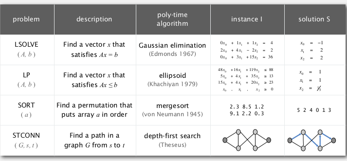
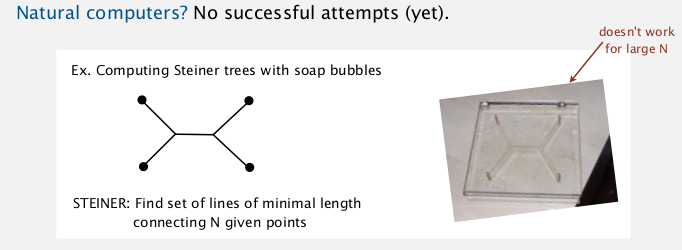
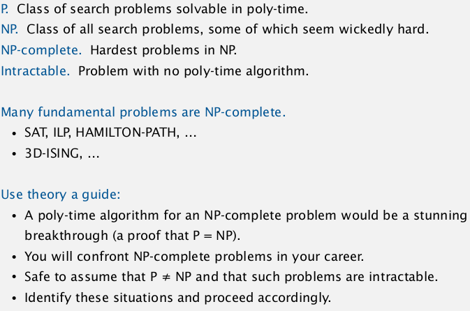

1. Introduction to Intractability
recall model of computation: DFA
a univeral model of computation: turing machine
→ no more powerful model of computation.
Turing machine can compute any function that can be computed by a physically harnessable process of the natural world.
bottom line: turing machine is a simple and universal model of computation.
Q. which algos are useful in practice?
useful in practice = polynomial time for all inputs
def. a pb is intractable if it cannot be solved in polynomial time.
2 pbs that can be proved to require exp time:
- Given a constant-size programme, does it halt in <=K steps ?
- Given a N*N chess board position, can the first player force a win ?
Bad news: very few pbs can be proved to require exp time...
2. Search Problems
Four fundamental problems:
- LSLOVE
Given a system of linear equations, find a solution
var: real numbers
→ guassian elimination
- LP
Given a system of linear inequaties, find a solution. (not necessarily find the opt)
var: real numbers
- ILP
Given a system of linear inequaties, find a 0-1 solution.
var: 0 or 1
- SAT
Given a system of boolean equations, find a binary solution.
Which ones of the 4 foundamental pbs have poly-time solutions?
- LSLOVE: Gaussian elimination works in O(n3)
- LP: Ellipsoid works in poly-time (simplex also poly-time in practice..)
- ILP, SAT: No poly-time algorithm known (or believed to exist) !
All 4 pbs are examples of search problems.
Search pb: given an instance I, find a solution S / report there's no solution.
requirement: able to efficiently (poly-time) check that S is a solution. (that's the case for the above 4 fundamental pbs)
another example:
FACTOR: given a n-bit integer, find a nontrival factor.
(given a solution, simply need to long-divide to check...)
3. P vs. NP
def. NP is the class of all search pbs. (ie. solution be checked efficiently)
NB: classical definition limits to yes-no pbs...
Significance: NP pbs are what scientists and engineers aspire to compute feasibly.
examples:

def. P is the class of search pbs that are solvable in poly-time.
(What scientists and engineers do compute feasibly.)
examples:

Nondeterminism
Nondeterminism machine can guess the solution (donot exist in natural world..). → NFA tries to simulate such a machine...
Ex. int[] a = new int[N];
・ Java: initializes entries to 0 .
・ Nondeterministic machine: initializes entries to the solution!

NP: Search problems solvable in poly time on a nondeterministic Turing machine.
Extended Church-Turing thesis:
P: Search pbs solvable in poly time in natural world.
do we have non-determinism in natural world? ---> natural computers ?
ex. STEINER tree: set of segments connecting given N points.
use soap → doesn't really work...

another example for P/NP: automating creativity
being creative VS appreciating creativity

The central question: does P=NP?
(can you alway avoid brute-force searching and do better?)

Millennium prize by Clay instute.
(among all ways of earning 1M dollars, this might be the most complicated way... @_@...)
4. Classifying Problems
classify pbs like classifying elements into perodic table.
key pb: satisfiablity
SAT. given a sys of boolean eq, find a solution.
exhaustive search: try 2^n possible solutions.
conjecture: no poly-time algo for SAT (ie. intractable)
Assumption: assume the intractability for SAT.
Tool: reduction
def. pb X reduces to pb Y: we can solve pb X with the algo for pb Y.

if SAT poly-reduces to pb Y ⇒ pb Y in (probably) intractable.
SAT poly-reduces to ILP

(all SAT pb can be reduced to 3SAT)
⇒ can be converted to an ILP pb:
for each eq, introduce a var Ci:


5. NP-Completeness
def. an NP pb is NP-complete if all pbs in NP poly-reduces to it.
prop. SAT id NP-complete.
any pb in NP poly-reduces to SAT (reverse direction as last lecture)
pf sketch: convert non-dertiministic turing machine notation to SAT notation...
cor. poly time algo for SAT iff P=NP...

⇒ there pbs are equivalent !


summary:

==...

6. Coping with Intractability
exploit intractability
cryptography ecopoits the hardness of FACTOR pb

Can factor an n-bit integer in n 3 steps on a "quantum computer.”
Coping with intractability
relax one of desired features...
- special cases

- Develop a heuristic, and hope it produces a good solution.
no guarantee
ex. TSP
- Approximation algorithm. Find solution of provably good quality.
Halmiton path
remark: Euler path (each edge once) easy, Halmiton path (each vertex once) NPC...
dfs solution for Halmiton path:
public class Halmiton{
private boolean[] marked;
private int count=0; // nb of Halmiton paths
public Halmiton(Graph G){
marked = new boolean[G.V()];
for (int v=0; v<G.V(); v++)
dfs(G,1,1);
}
private void dfs(Graph G, int v, int depth){
if(depth==G.V()) count++;
marked[v]=true;
for(int w: G.adj(v))
if(marked[w]==false) dfs(G, w, depth+1);
marked[v]=flase; // backtrack
}
}


Comments !